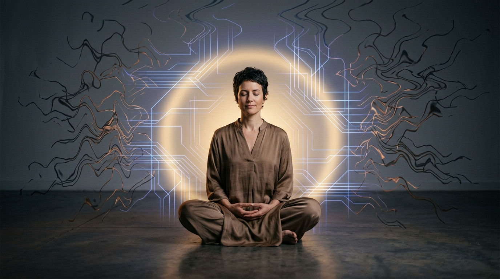

Инженерный разбор: почему качели не останавливаются и как вернуть рубильник себе

«Ты сжигаешь мегаватты своей жизненной энергии на чужое напряжение. Твоя боль — это не слабость, а перегрузка цепи: ты пытаешься зарядить свой генератор от мужчины, у которого сеть уже занята другой семьей».
Когда рубильник твоего состояния в чужих руках — жизнь превращается в мучительное ожидание и тепловой ожог от тревоги.
Он написал — 100% заряд и эйфория. Уехал к семье и замолчал — обесточивание и ломка. Ты отдала рубильник счастья вовне.
Когда ты ждешь: мужчина чувствует нужду — ему душно, он отступает. Когда отпускаешь: провод разгружается — он тут же пишет: «Привет, соскучился». Цикл повторяется.
Ты не разгружала вагоны, но к вечеру нет сил. 90% энергии мозга сгорает в трении: слежка за онлайном, расшифровка смайликов, страх будущего.
Перестать ждать спасения от чужой лампочки. Твоя ценность не зависит от того, свободен ли он сегодня вечером.
Не держи всё напряжение на одном контакте! Подай ток в тело (сон, спорт), дело (деньги, цели) и подруг. Колебания одной ветки перестанут рушить мир.
Его занятость или молчание — это не «я не нужна», это объективная реальность его семейного статуса. Твое внутреннее ядро неприкосновенно.
Ты либо увидишь в нем партнера без удушающей нужды, либо спокойно поймешь: «Мне тесно в роли второго плана» — и выйдешь без драмы.